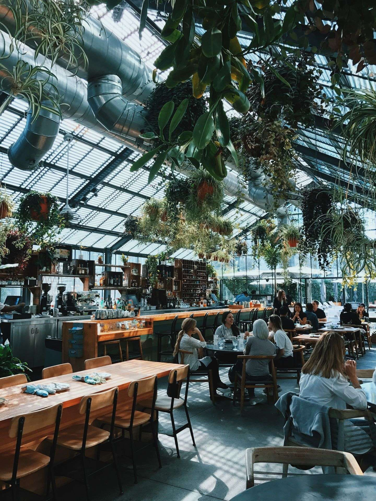

Michelles Kaffe
Ingredienser
I många av de kaffeproducerande länderna finns risker gällande både arbetsmiljö- och arbetsvillkorsfrågor. Korruption och barnarbete är inte ovanligt i många odlingsländer. Det ställer krav på importörerna att vara extra noga och ta ansvar. Sedan juni 2014 köper Michelle enbart in 100% hållbart certifierat kaffe från odlingar som är certifierade av UTZ eller Fairtrade och KRAV. Dessa etablerade certifieringsstandarder har omfattande kriterier för att förbättra jordbruksmetoder och arbetsvillkor inom kaffeodling. Dessa etablerade certifieringssystem har omfattande kriterier för förbättrade jordbruksmetoder, arbetsmiljö och arbetsrätt. De motverkar dessutom barnarbete och diskriminering.